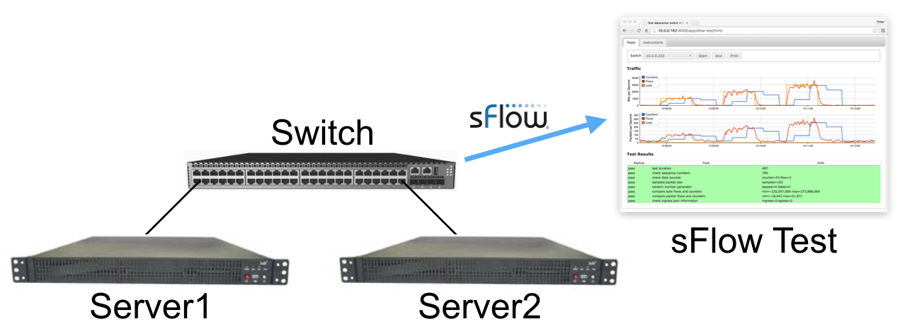

| Status | Test | Info |
|---|
Tests can be applied while a switch is in production and are a useful way of verifying that the switch is configured and operating correctly.
The following table contains recommended sFlow configuraton settings for production switches:
| Port Speed | Sampling Rate | Polling Interval |
|---|---|---|
| 1 Gbit/s | 1-in-1,000 | 30 seconds |
| 2.5 Gbit/s | 1-in-2,500 | 30 seconds |
| 5 Gbit/s | 1-in-5,000 | 30 seconds |
| 10 Gbit/s | 1-in-10,000 | 30 seconds |
| 25 Gbit/s | 1-in-25,000 | 30 seconds |
| 40 Gbit/s | 1-in-40,000 | 30 seconds |
| 50 Gbit/s | 1-in-50,000 | 30 seconds |
| 100 Gbit/s | 1-in-100,000 | 30 seconds |
Enable counter polling and ingress packet sampling on all switch ports on all switches.
The diagram shows a simple setup for bench testing a switch. Server1 and Server2 are Linux servers uses to generate traffic through the switch being tested.
The following steps run the test:
iperf3 -ssh run-test.txt Server2The aggressive sampling rate used in this test generates a load on the switch management CPU that is representative of production deployment using the recommended settings.